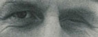
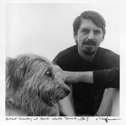
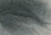
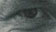
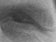
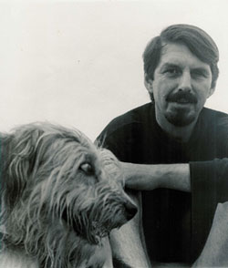

<!DOCTYPE html PUBLIC "-//W3C//DTD XHTML 1.0 Transitional//EN" "http://www.w3.org/TR/xhtml1/DTD/xhtml1-transitional.dtd">
<html xmlns="http://www.w3.org/1999/xhtml"><!-- InstanceBegin template="/Templates/anypage.dwt" codeOutsideHTMLIsLocked="false" -->
<head>

<meta http-equiv="Content-Type" content="text/html; charset=ISO-8859-1" />
<!-- InstanceBeginEditable name="doctitle" -->
<title>Sleuthing Creeley's Eye</title>
<!-- InstanceEndEditable -->
<!-- InstanceBeginEditable name="head" --><!-- InstanceEndEditable -->
<link href="../favicon.ico" rel="icon" type="image/x-icon"  />
<link href="../favicon.ico" rel="shortcut icon" type="image/x-icon" />

<link href="../styles/main_three_col.css" rel="stylesheet" type="text/css" />
<!--[if IE]>
<style type="text/css"> 
/* place css fixes for all versions of IE in this conditional comment */
.three_column #sidebar1, .three_column #sidebar2 { padding-top: 30px; }
.three_column #mainContent { zoom: 1; padding-top: 15px; }
/* the above proprietary zoom property gives IE the hasLayout it needs to avoid several bugs */
</style>
<![endif]--></head>

<body class="three_column">

<div id="container">
  <div id="header"><a name="top" id="top"></a><!-- InstanceBeginEditable name="header" --><!-- #BeginLibraryItem "/Library/navmap-green.lbi" -->
<map name="green_line_Map">
<area shape="poly" alt="" coords="81,108, 104,97, 131,137, 111,142" href="../arthur.html" />
<area shape="poly" alt="" coords="51,104, 68,97, 104,142, 68,137, 51,108" href="../mother.html" />
<area shape="poly" alt="" coords="21,119, 33,108, 51,137, 39,142" href="../40.htm" />
<area shape="poly" alt="" coords="248,156, 265,156, 297,190, 297,198, 290,190" href="../marc.html" />
<area shape="poly" alt="" coords="283,165, 273,156, 283,147, 307,181, 307,193" href="../cratsley.html" />
<area shape="poly" alt="" coords="232,156, 283,216, 293,198, 246,156" href="../poem.htm" />
<area shape="poly" alt="" coords="210,156, 279,234, 283,216, 210,147" href="../namesdp.htm" />
<area shape="poly" alt="" coords="178,156, 248,234, 265,224, 201,156" href="../portrait.htm" />
<area shape="poly" alt="" coords="155,156, 201,193, 201,186, 175,156" href="../here_we_are/index.html" />
<area shape="poly" alt="" coords="189,224, 210,206, 140,147, 140,156" href="../death.html" />
<area shape="poly" alt="" coords="111,156, 155,216, 170,198, 131,156" href="../entertaining.html" />
<area shape="poly" alt="" coords="131,216, 140,206, 140,198, 104,156, 92,156" href="../advice.html" />

<area shape="poly" alt="" coords="0,165, 41,216, 51,198, 11,156" href="../essay.html" />
<area shape="poly" alt="" coords="68,156, 92,156, 111,193, 104,193" href="../brudnoy.html" />
<area shape="poly" alt="" coords="51,156, 58,156, 104,198, 92,206" href="../wisteria/index.html" />
<area shape="poly" alt="" coords="21,156, 40,156, 81,198, 58,206" href="index.html" />
<area shape="poly" alt="" coords="293,119, 307,119, 346,165, 326,176" href="../silverl.htm" />
<area shape="poly" alt="" coords="316,119, 335,119, 396,193, 373,193" href="../arbus1.htm" />
<area shape="poly" alt="" coords="347,125, 338,119, 357,119, 513,277, 488,277, 338,119" href="../wrob2.htm" />
<area shape="poly" alt="" coords="373,119, 399,119, 419,147, 401,156" href="../wrob2.htm" />
<area shape="poly" alt="" coords="401,119, 419,119, 521,226, 506,234" href="../linda.html" />
<area shape="poly" alt="" coords="448,119, 466,119, 595,246, 586,268" href="../andrews.html" />
<area shape="poly" alt="" coords="480,119, 501,119, 533,165, 513,165" href="../leemil.htm" />
<area shape="poly" alt="" coords="544,119, 558,119, 595,155, 595,175" href="../barthes.htm" />
<area shape="poly" alt="" coords="513,27, 544,27, 603,108, 576,108" href="../bookreviews.html" />
<area shape="poly" alt="" coords="459,0, 448,0, 488,0, 576,108, 556,108" href="../at12.htm" />
<area shape="poly" alt="" coords="466,44, 488,44, 556,108, 524,108" href="../abbott.htm" />
<area shape="poly" alt="" coords="513,122, 537,119, 576,164, 560,175" href="../cindy.htm" />
<area shape="poly" alt="" coords="448,44, 466,44, 512,108, 513,108, 488,108" href="../kanga.htm" />

<area shape="poly" alt="" coords="430,62, 452,62, 488,108, 466,108" href="../arbus2.htm" />
<area shape="poly" alt="" coords="373,36, 399,36, 466,108, 443,108, 381,36" href="../andrews.html" />
<area shape="poly" alt="" coords="373,62, 399,62, 430,100, 420,108" href="../lisette.htm" />
<area shape="poly" alt="" coords="316,36, 335,27, 399,99, 391,108" href="../mbwhite.htm" />
<area shape="poly" alt="" coords="297,44, 319,44, 373,99, 356,108" href="../wrob2.htm" />
<area shape="poly" alt="" coords="248,27, 274,27, 338,99, 321,108" href="../streetw.htm" />
<area shape="poly" alt="" coords="189,11, 224,10, 307,104, 297,108" href="../wrob.htm" />
<area shape="poly" alt="" coords="189,44, 210,44, 232,81, 209,81" href="../pals" />
<area shape="poly" alt="" coords="155,44, 170,44, 201,81, 180,81" href="../pals/aldocaseyeugeneisaacrafi.html" />
<area shape="poly" alt="" coords="131,36, 170,77, 143,81, 111,36" href="../pals/after8thgrade.html" />
<area shape="poly" alt="" coords="92,36, 104,36, 131,75, 113,89" href="../pals/mlkschool.html" />
<area shape="poly" alt="" coords="75,36, 74,36, 58,49, 88,89, 104,77" href="../pals" />
</map>
<!-- #EndLibraryItem --><h1>Sleuthing Creeley's Eye</h1>
      <p>Part of
        <a href="../index.html">elsadorfman.com</a>      </p>
    <p>&nbsp;</p>
  <!-- InstanceEndEditable -->
  <!-- end #header --></div>
  <br class="clearfloat" />
  <div id="sidebar1"><!-- InstanceBeginEditable name="this_page" --><!-- #BeginLibraryItem "/Library/learn-camera.lbi" --><h3>Learn About Elsa's 20x24 Polaroid Camera</h3>
    <p>
      <a href="../camera.html"></a></p> 
    <!-- #EndLibraryItem --><!-- #BeginLibraryItem "/Library/get_postcards.lbi" --><h3>Get Elsa's Postcards</h3>
    <p>
      <a href="../postcards.html"></a>
    </p>
    <!-- #EndLibraryItem --><!-- #BeginLibraryItem "/Library/books_amazon.lbi" -->    <h3>Find Elsa's Books</h3>
    <p>
    <a href="http://www.amazon.com/exec/obidos/tg/detail/-/0966866509/elsadorfmanphoto"></a> 
    <a href="http://www.amazon.com/exec/obidos/tg/detail/-/1887123261/elsadorfmanphoto"></a> 
    <a href="http://www.amazon.com/exec/obidos/tg/detail/-/0879230991/elsadorfmanphoto"></a></p>
<!-- #EndLibraryItem --><p>&nbsp;</p>   <!-- InstanceEndEditable -->
  <!-- end #sidebar1 --></div>
  <div id="sidebar2"><!-- InstanceBeginEditable name="support" --><!-- #BeginLibraryItem "/Library/support.lbi" -->    
    <h3>Support Elsa's Site </h3>
    <p>
      <a href="../donations.html"></a>    </p>
<!-- #EndLibraryItem --><!-- insert Google Ads --><!-- #BeginLibraryItem "/Library/ads.lbi" --><div id="block_ads">
   <script type="text/javascript"><!--
google_ad_client = "pub-1057700395270165";
/* 160x600, created 11/18/09 */
google_ad_slot = "7130245912";
google_ad_width = 160;
google_ad_height = 600;
//-->
</script>
<script type="text/javascript"
src="http://pagead2.googlesyndication.com/pagead/show_ads.js">
</script>
    </div><!-- #EndLibraryItem --><!-- InstanceEndEditable --><!-- end sidebar2 -->
</div>
  <div id="mainContent"><!-- InstanceBeginEditable name="Story" -->

<table>
<tr>
<td>
<h2>Sleuthing Creeley's Eye</h2>
</td><td>

<p><center>
OR</center><br />

</p></td></tr></table>


<table>
<tr>
<td bgcolor=e6e6e6>
<a href="20050408-creeley-ps.jpg"></a></td>
<td>
from the Boston Phoenix,<br />
April 8, 2005, is that a SECOND<br /> 
<--------- eye or what??!


<p>
The first person to think that there was something weird abt Robert 
Creeley's R eye in the Pressed Wafer postcard and poster announcing  a 
memorial reading at MIT for Creeley was   Creeley's wife, Penelope.  Have I 
gone mad, she asked me. It looks like Robert has two eyes.  Did you do 
anything to the picture? Did you? Did you?  I assured her I had printed the 
picture myself, from the original negative, abt twenty years ago at 
least.  It was a so-called vintage print.
</p><p>
</p></td></tr></table>
<br />
<center></center><pre>
to:bevcobett...
from:elsad@comcast.net
Subject: Re:postcards/posters

.......pen looked at the postcards and she swears bob has a glass eye in his 
missing eye, facing right!!!!!!do you remember if way back bob had a glass 
eye???? pen thinks he lost his glass eye in india and never replaced 
it.  do you have a memory?  I don't have a memory.  anyhow. that might just 
be the ONLY portrait of bob w/ his second glass eye, one other than the one 
lost in india.  I wrote to ask bobbie!!!!   ......pen says the card looks 
grand and she seems very pleased, if perplexed by the EYE. I have never 
noticed the second eye, because i KNOW there is just one eye and because of 
one eye spot in the image.  I always thought that one eye spot and one eye 
bob made the picture perfect. cheers,e.
</pre>
<p>
<center>

</center>
</p><p>
</p><pre>
to: Bevcobett...., PenHC
from:elsad@comcast.net
Subject: Fwd: here it is....

well, the mystery continues. like the shroud of turin or seeing the crying 
madonna.  I NEVER saw an eye in that image before pen mentioned the "eye" 
to me and now that's all i see. and it must be an illusion. it is my 
negative. never printed by anyone else. never touched. long long long 
before photoshop in any case. cheers.e.
</pre>
<p>
<center>

</center>
</p><p>
From: bevcobett.....<br />
Subject: bob's "eye" ()<br />
to:elsad@comcast.net
</p><pre>
You're right.  I keep looking at the photo and seeing the eye that can't be 
there.  Wouldn't the socket be dark? yes, but that looks like an eye to me. 
AAGGHHHH!......See you Saturday. Bill
</pre>
<p>
<center>

</center>
</p><p>
</p><pre>
  to:elsad@comcast.net
from: bobbie hawkins
date:5/1/05  11:59:39 AM
subject:here it is

Dear Ellie,

     The question is, did this print come from your files?  At which point 
it is a mystery.
     But there were instances in the past where publishers took photos and 
"improved" them by making a second
eye.  This isn't the one I had in mind, but it does look like a second eye 
is there.

And no, bob never wore a glass eye while I was with him.
Let me know what the outcome is.
love,
Bobbie
</pre>
<p>

<center>

</center>

</p><p>
from: bevcobett....<br />
subject:Eye for an eye (, )<br />
</p><pre>
to: elsad@comcast.net

Ellie:the plot thickens.  Last night in Providence, where I had gone to 
hear Clark Coolidge read, I gave some of your cards to a poet named Mike 
Magee who had known Bob slightly.  He took one look at the photo and 
exclaimed, "Is that an eye? It is, isn't it?"  He wasn't really asking a 
question, just assuring himself that the eye he saw was there.  I admit 
that I'm now convinced that Bob wore a glass eye that summer.  When did he 
remove it for good???.......See you Saturday, Bill
</pre>
<p><center>

</center>
</p><pre>
<p>
to:bevcobett,pen creeley, bobbie hawkins, from:elsad@comcast.net
subject: you will not believe this...........

but when I had the original photographed SCANNED, for Bill's commentary on 
Bob for the Boston Phoenix, the scanner person at the Phoenix apparently 
put the other eye in the foto of bob!!!!!!neither bill nor I noticed when 
we proofed it.  I totally forgot the scanner step when I assured Pen no one 
had touched my negative. No one had touched my negative but the print had 
been SCANNED.....a step I still haven't obviously incorporated into my 
psyche as being a possibility.  I was just this hour housekeeping in my 
studio and found the ORIGINAL print that the scan was made from and bob has 
only one eye.  I am dumbfounded. bill: how did we not catch this?????? I am 
beside myself. I am beside myself. So much for modern technology and how it 
lets people run away w/ things.....and on my side, so much for attention to 
detail. 

this is like a stamp w/ the flag upside down. xox.e.
</p></pre>
<p>
<center>

</center>

</p><p>
</p><pre>
To: bevcobett
from:elsad@comcast.net
Subject: Re: you will not believe this...........
Cc: PenH, bobbiehawkins

i think i figured it out. when i sent the original foto to the phoenix they 
scanned it.....if you blow up the image you and i have you can really see 
where they scanned in the second eye.....when you know what yr looking 
for.   I only realized when i found the original print that I sent the 
phoenix. they had made me a cd w/ the image. it is hard to tell in the 
phoenix issue.....really hard to tell. anyhow. I am so 
dumbfounded.........it's like fdr standing by himself.......crutches 
airbrushed out....etc. etc.
I don't know. it is definitely scanned into the cd i got from the phoenix. 
but it is easy to see how we didn't notice in the phoenix. but neither of 
us noticed in the card/poster proof.    good thing we aren't radiologists 
reading mris. e.
</pre>
<p>
<center>

</center>

</p><p>
</p><pre>
To:elsad@comcast.net
from: bevcobett......
  02:53 PM 5/4/2005


This is unbelievable! Who scanned it? Why would someone do that? I'm
dumbfounded. Bill
</pre>
<p>
<center>

</center>
</p><p>
</p><pre>
-----Original Message-----
From: Elsa Dorfman [mailto:elsad@comcast.net]
Sent: Wednesday, May 04, 2005 2:49 PM
To: Harvey Silverglate
Subject: Re: Creeley & dog


harv . you won't believe this. but the phoenix photoshopped in the
second
eye in the creeley picture.
can
you imagine.........the phoenix added an eye when they ran bill's creeley 
obit. xox.e.
</pre>
<p>
<center>

</center>
</p><pre>
From: "Harvey Silverglate"
To: "Elsa Dorfman" <elsad@comcast.net>

You gotta tell the Phoenix they can't do that on your photos. I'm
aghast. The eye socket is an important part of the picture and the
personna.
</pre>
<p>
<center>

</center>
</p><pre>
From: Bevcobett
Date: Thu, 5 May 2005 08:05:21 EDT
Subject: Re: you will not believe this...........
To: elsad@comcast.net


Checked with our designer Cris Mattison who didn't see it either, but 
says
that with photoshop it's easy to add/subtract/airbrush, etc. What amazes 
me is why anyone would think it their right to put in the eye? Did an 
empty socket offend someone? Did they think the photograph left Bob's eye 
out? I think we didn't see it because we knew the photo so we weren't 
really looking at it. Yes, it's a good thing we're not reading x-rays! see 
you Saturday, Bill
</pre><p>
<center>

</center>

</p><p>
</p><pre>

From: Bevcobett
Date: Thu, 5 May 2005 08:07:31 EDT
Subject: Re: the phoenix
To: elsad@comcast.net

Don't feel like an idiot. We missed it because we weren't looking for 
it
and were looking at the original. That's the photo that was in our mind's 
eye. Why not call Peter K and say did you know that someone at the Phoenix 
photoshopped my photo of Creeley and put in an eye that wasn't there? Of 
course he'll be as dumbfounded as we are. I can, if you want, let Jon 
Gareliuck know and he can look into it. Amazing! Bill
</pre><p>
<center>

</center>
</p><p>
</p><pre>
Date: Fri, 6 May 2005 07:01:39 -0700 (PDT)
From: Mary Panzer
Subject: Re: read this pls
To: Elsa Dorfman elsad@comcast.net

Elsa,

what a story --- and what a warning. obviously the photo-shopper had no
idea that he/she had done something terribly WRONG. but it's a perfect 
example --- of the way a correction can slip in through a technological 
step that is almost invisble -- imagine how hard it would be to catch if 
it had traveled any further --- does this mean that from now on every 
single image that anyone sends anywhere has to carry a warning: DO NOT 
CORRECT, IMPROVE CHANGE OR ALTER THIS IMAGE IN ANY WAY.

?

I am still working. but it has to end very soon.

love,

Mary
</pre>
<p>
<center>

</center>
</p><p>
</p><pre>

Date: Thu, 05 May 2005 17:04:16 -0400
Subject: Re: Concerning Robert Creeley
From: Ben Carmichael
To: Elsa Dorfman elsad@comcast.net

Elsa,

You know, that's really funny, because it was the first thing I noticed 
when you sent it to me. And, to be honest, I didn't know whether I was 
going to print it or not, because I felt like everyone else who knew 
him - that his missing eye was a part of who he was. And to memorialize 
him with both eyes raised some questions. What a great series of posts 
- I'm glad to know how it came about!

I'll be sure to send you a copy of the magazine when it comes out. Many 
thanks, once again.

All the best,
ben


P.s. Your interview on NPR was lovely. Bob was great at email. That bit 
made me laugh.


X-Originating-IP: [12.11.184.17] 
From: "Kadzis, Peter" 
To: 'Elsa Dorfman' elsad@comcast.net 
Subject: RE: creeley has one eye 
Date: Fri, 6 May 2005 10:53:02 -0400 

One eye indeed! 

Can we write about this for next week's paper? 
</pre>


<center></center>
<p>

It is soooo weird that someone added Bob's missing eye.  Bob was so much 
abt his missing eye.  Seeing w/ one eye changed his perspective and I 
always thought made him hypersensitive to art, to understanding/ catching 
on to work that I only got much later.  And Bob always  had a bandana, a 
red one, or a paper towel in his hand to mop his missing eye, mop the 
socket. The eye was gone but its absence was always there, weeping in its 
weird way.  The way someone is tall or very short, or IS, in some physical 
way, Bob was the way he was, w/ his one eye.  For those of us who have Bob 
imprinted in our brain, we don't even notice the two eyes. Our brain takes 
one out.  But for all those people who forevermore won't see Bob Creeley, 
if they see him w/ two eyes in this portrait,  they don't get the impact, 
the whole of one eye creeley. and the portrait loses its humor. it is no 
longer one eye   dog and one eye man.  Roland Barthes wd go insane. The 
missing eye was the PUNCTUM.
</p><p>
For me as the photographer i am totally flummoxed. The people at the 
Phoenix are family.  And someone at the Phoenix was being helpful. trying 
to make my image better and trying to make Creeley 
look.......what.......like he had the two eyes they thought he had.  Make 
him look normal.  Someone who didn't know Creeley because to know Creeley 
is to know he writes in short lines and he has one eye and is a great 
poet.......So an age gap perhaps between me and Creeley and the photo 
person @ Phoenix. .  But not to call me just to make sure they were 
clarifying an eye that was there but was hard to see.  I was a phone call 
away. Everyone is a phone call away these days, even if almost 
anywhere.   What does this say abt photoshop.  Everyone who uses photoshop 
is so used to getting rid of the hair on the arms, the wisp on the 
forehead, of taking off ten pounds, of adding jewelry. used to making a 
person conform to some ideal the photoshopper has, w/o knowing it, in 
his/her head. the improvements the photoshopper can bestow   go on and on. 
Reality hardly matters . I guess  when 1spends hours working w/ 
photoshopand has inhaled the pssibilities of photoshop, endless that they 
are, one can't resist adding an eye to a poor guy w/ one eye.Can the 
photoshopper contemplate that the eye is gone and should be gone and 
doesn't need to be added to the poet's face.  The missing eye isn't about 
missing light. The photographer doesn't need help.
</p><p>
In my portrait of bob creeley, reality really matters. The missing eye 
is   essential Creeley.
</p><p>
What wd Bob say?  I can imagine two scenarios.  In one, he blows it off. 
Things happen.  And in the other scenario, he's bugged. And in either 
scenario he worries if I am upset. And will Bill Corbett have to waste all 
the postcards and posters.

</p><p>
<center>

<a href="1967-creeley.jpg"></a><br />
(<i>scan of original print containing original eye</i>)
</center>
</p><hr />
<h3>more</h3>
<ul>
<li><a href="http://www.lannan.org/lf/rc/event/robert-creeley/">Reading by Robert Creeley</a> in which he talks about writing <em>En Famille</em> in collaboration with Elsa</li>
<li>Robert Creeley's website: <a href="http://wings.buffalo.edu/epc/authors/creeley/">http://wings.buffalo.edu/epc/authors/creeley/</a>

</li><li>Creeley in Elsa's <a href="../housebook/flagg_streete.html#creeley">housebook</a>

</li>
<li>Creeley and Dorfman's <a href="../enfamille/dorfman1.html" target="_blank">en famille book</a> (web version)</li>
<li>Bob Oakes talks with Elsa about <a href="http://www.publicbroadcasting.net/wbur/news.newsmain?action=article&ARTICLE_ID=756237" targer="_blank">Creeley on WBUR</a>
</li></ul>

<i>written and orchestrated by <a href="../index.html">Elsa Dorfman</a>
designed and formatted by Kyle Nicholls</i>

<!-- InstanceEndEditable -->
<p style="text-align:right;"><a href="#top">Top</a></p>
<hr />
<div style="text-align:center;"><!-- #BeginLibraryItem "/Library/books_amazon.lbi" -->    <h3>Find Elsa's Books</h3>
    <p>
    <a href="http://www.amazon.com/exec/obidos/tg/detail/-/0966866509/elsadorfmanphoto"></a> 
    <a href="http://www.amazon.com/exec/obidos/tg/detail/-/1887123261/elsadorfmanphoto"></a> 
    <a href="http://www.amazon.com/exec/obidos/tg/detail/-/0879230991/elsadorfmanphoto"></a></p>
<!-- #EndLibraryItem --><!-- #BeginLibraryItem "/Library/copyright_mail.lbi" -->
 <p>Please <strong>change your links and bookmarks</strong> to    elsadorfman.com! </p>
<p>
   Elsa thanks her cybergodmother,
   <a href="http://photo.net">photo.net</a>, her  longtime, most generous host at
  <a href="http://furfly.com">furfly.com</a>, and her current web host
   <a href="http://mikesisk.com/"> Mike Sisk</a>
   at
   <a href="http://tcpipranch.com/">TCP/IP Ranch, LLC</a>.</p>
<!-- #BeginLibraryItem "/Library/contact_copyr.lbi" -->
<p><strong>Copyright 1970-2010 &copy;  Elsa Dorfman. </strong></p>
<p>
    Inquiries for the use of Elsa's content are welcomed! 
    Please 
    <a href="../copyright.html">read these guidelines</a>. <br />
    Contact
    <a href="mailto:elsad@comcast.net?Subject=Website Contact">Elsa Dorfman</a> via email or send <a href="mailto:webmaster@elsadorfman.com?Subject=Website Feedback">Website Feedback</a> to her webmaster.</p>
<!-- #EndLibraryItem --><!-- #EndLibraryItem --><!-- #BeginLibraryItem "/Library/footer-links.lbi" -->
<p><a href="../index.html">Elsa's Home Page</a> | <a href="../index-directory.html">Site Directory</a> | <a href="../search.html">Search</a> <a href="../search.html"></a></p>
<!-- #EndLibraryItem -->
<!-- end of centering div --></div>
<!-- end #mainContent --></div>
<!-- end #container --></div>
</body>
<!-- InstanceEnd --></html>
